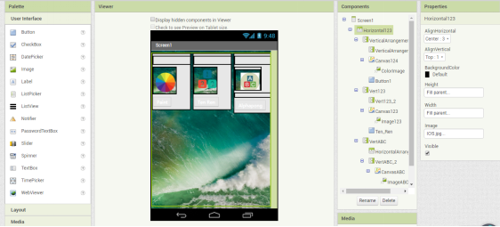
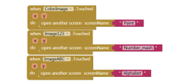
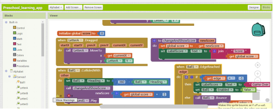
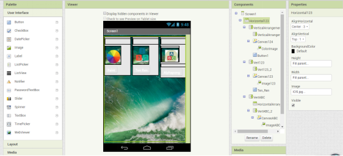
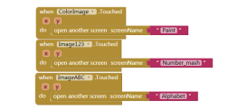
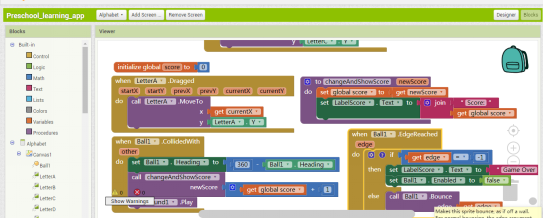

Portfolio
This is my Portfolio Page!

 My partner Leona and me created this game called flappy bird, the goal of this game is to control the flappy bird to score as many points as possible. Each time the flappy bird successfully passes an obstacle (pipe), the player will receive one point. On the top left corner, there is a timer and a scoreboard. Each time the flappy bird tounches the edges or the pipe, the game will restart and both the timer and the scoreboard will return to 0. When control the bird, the bird will fly up a little bit when the player presses space key, otherwise, the bird will continue to fly downward due to gravity. Again, try not to touch th edges or the pipes. Have fun Playing!

My partner Kevin and I created this preschool learning app on app inventor. As shown above, this app mainly consists of three games: a drawing app, Ten-Ren game, and alphapong. The purpose of this app is to help preschool learners to develop more knowledge in a relaxing and fun environment.

Some diffuculties we faced were making the score stop at 10 and making the restart button workI added a few lines of code that allowed the 10 to disappear then making a “You Win” image show up and for the restart button, I made it so that when it is pressed, whatever number is on the screen will disappear and the number 1 will come back and the score will restart. The other struggle me and partner had was making the screen switch. We spent a day trying to figure this out, we knew there was a command for this, but we had a hard time figuring out how to use it. We finally got the code working successfully and it’s able to switch screens.

First off, we added a Global Variable called “global score” which is set to 0. Below that we have a “UpdateScore” variable and its subscript is ScoreLabel Text and the code connected to that is “Score” which is directly connected to the Label in designer and every time someone gets a point, it’ll update the score and “get global score” allows it to do that. We then have “when Two touched do” and whenever the number 2 is touched, then it’ll add 1 point, make the number 2 disappear, then make the number 3 visible.
My partner Leona and me created this game called flappy bird, the goal of this game is to control the flappy bird to score as many points as possible. Each time the flappy bird successfully passes an obstacle (pipe), the player will receive one point. On the top left corner, there is a timer and a scoreboard. Each time the flappy bird tounches the edges or the pipe, the game will restart and both the timer and the scoreboard will return to 0. When control the bird, the bird will fly up a little bit when the player presses space key, otherwise, the bird will continue to fly downward due to gravity. Again, try not to touch th edges or the pipes. Have fun Playing!

My partner Kevin and I created this preschool learning app on app inventor. As shown above, this app mainly consists of three games: a drawing app, Ten-Ren game, and alphapong. The purpose of this app is to help preschool learners to develop more knowledge in a relaxing and fun environment.

Some diffuculties we faced were making the score stop at 10 and making the restart button workI added a few lines of code that allowed the 10 to disappear then making a “You Win” image show up and for the restart button, I made it so that when it is pressed, whatever number is on the screen will disappear and the number 1 will come back and the score will restart. The other struggle me and partner had was making the screen switch. We spent a day trying to figure this out, we knew there was a command for this, but we had a hard time figuring out how to use it. We finally got the code working successfully and it’s able to switch screens.

First off, we added a Global Variable called “global score” which is set to 0. Below that we have a “UpdateScore” variable and its subscript is ScoreLabel Text and the code connected to that is “Score” which is directly connected to the Label in designer and every time someone gets a point, it’ll update the score and “get global score” allows it to do that. We then have “when Two touched do” and whenever the number 2 is touched, then it’ll add 1 point, make the number 2 disappear, then make the number 3 visible.